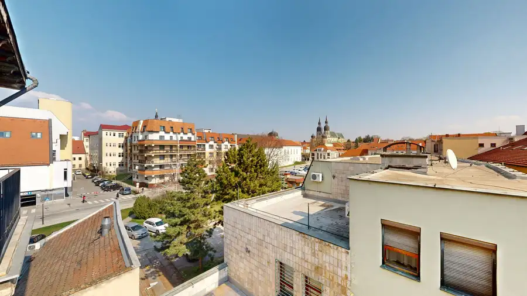
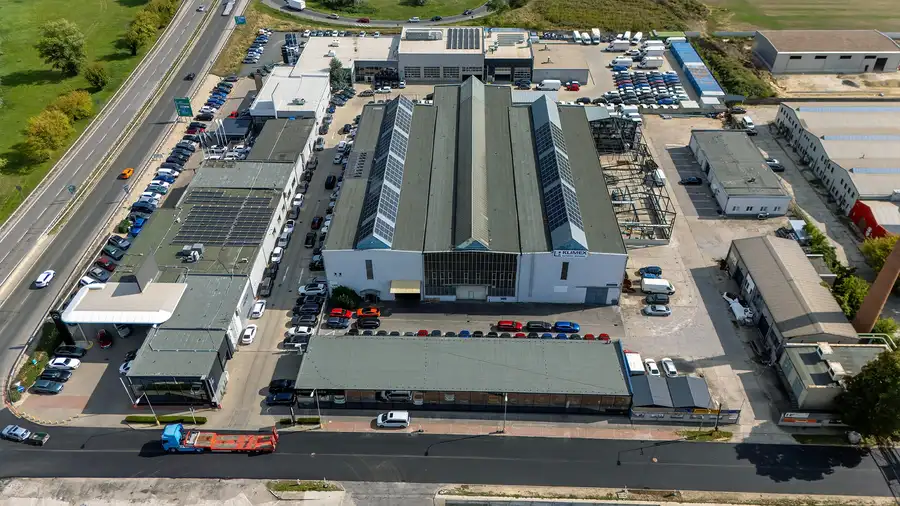
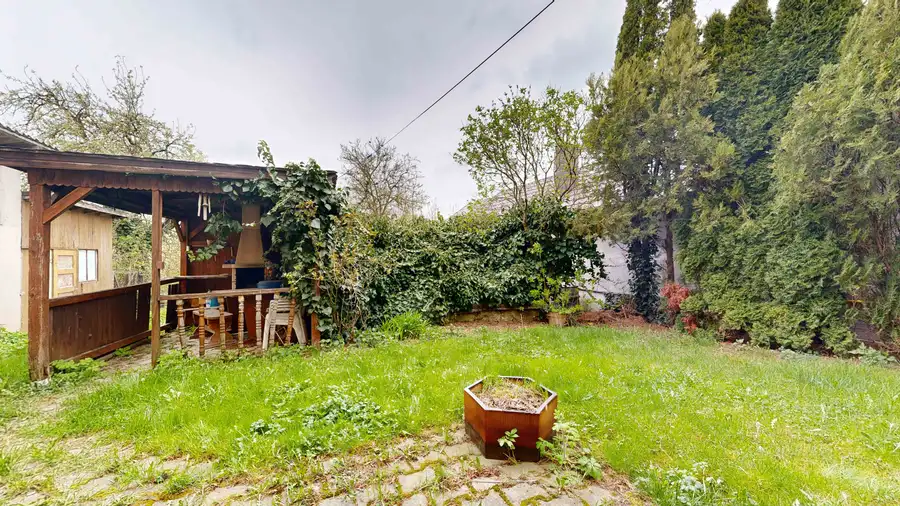

PREDAJ | Veľkorysý rodinný dom v Trnave s 3 bytovými jednotkami – bývanie aj investícia
Trnava
- Plocha321 m²
- StavNovostavba
- VlastníctvoOsobné
- Energetická triedaB
O nehnuteľnosti
CASMAR realitná kancelária exkluzívne ponúka na predaj nadštandardný priestranný dvojpodlažný rodinný dom situovaný v pokojnej a vyhľadávanej lokalite Trnavy (Tulipán).Mestská časť Trnavy – Tulipán dlhodobo patrí medzi vyhľadávané lokality vďaka svojej pokojnej atmosfére a výbornej dostupnosti.Nehnuteľnosť ponúka výnimočných 321 m² obytnej plochy a vďaka svojej dispozícii je vhodná nielen na komfortné rodinné bývanie, ale aj na kombináciu bývania a podnikania, prípadne ako investícia s možnosťou využitia viacerých bytových jednotiek. Parametre nehnuteľnosti:• Výmera pozemku: 810 m²• Zastavaná plocha: 253 m²• Prízemie s terasou: 192 m²• Obytné podkrovie s terasou: 129 m²• Celková obytná plocha: 321 m²• Konštrukcia: tehlová stavba• Vlastníctvo: osobné• Terén: rovinatý Možnosti využitia:• Plnohodnotné viacgeneračné bývanie• Kombinácia bývania a podnikateľskej činnosti• Sídlo firmy, ambulancia, služby, kancelárske priestory• Investičná príležitosť Technické vybavenie a výhody: • Parkovanie pre 6 áut vo dvore, možnosť parkovania aj pred domom• Hliníkové vstupné dvere a predné okná s izolačným trojsklom• Ostatné okná a dvere PVC s izolačným trojsklom• Vysokokvalitné, odolné podlahy• Pivnica o výmere 20 m²• Vŕtaná studňa na pozemku• Verejný vodovod pri pozemku• Elektrina 230 V / 380 V• Napojenie na všetky inžinierske siete – voda, kanalizácia, elektro, plyn• Železobetónová platňa v záhradnej časti – vhodná pre altánok alebo iné využitie, prípadne menšiu stavbu• Alarm v objekte• Prípojka Telecom• Príprava kabeláže pre kamerový systém (interiér aj exteriér)• Kondenzačný plynový kotol – nízke náklady na kúrenie Lokalita a občianska vybavenosť:• Tichá rezidenčná zóna s rodinným charakterom• Základná škola s modernou materskou školou v pešej dostupnosti• Športoviská a telocvične – ideálne pre rodiny s deťmi• Zastávka MHD pár minút od domu• Reštaurácia a služby na dosah• Rýchle napojenie na R1, D1 aj pohodlná dostupnosť do centra mestaLokalita ponúka ideálnu rovnováhu medzi pokojom bývania a praktickým mestským komfortom – či už pre rodinu, alebo pre podnikateľské využitie nehnuteľnosti. Cena: 549.000 € /dohoda možná/ Mgr. Zuzana Benkovská📞 0907 045 777📧 benkovska@casmar.sk
Parametre
| Druh | Rodinný dom |
|---|---|
| Dátum zverejnenia | 8. 9. 2026 |
| Energetický certifikát budovy | B |
| Plocha pozemku | 810 m² |
| Počet pivníc | 1 |
| Rok kolaudácie | 2016 |
| Stav nehnuteľnosti | Novostavba |
| Terén pozemku | Rovinatý |
| Typ | Predaj |
| Vlastníctvo | Osobné |
| Vybavenie | Pivnica |
| Zastavaná plocha | 253 m² |
| Úžitková plocha | 321 m² |
Kde to je


Mohlo by Vás zaujímať

BytNové10 250 000 €PREDAJ | 3-izbový byt priamo v srdci Trnavy – skvelý potenciál Trnava 3-izbový94.98 m² CASMAR realitná kancelária exkluzívne ponúka na predaj priestranný 3-izbový byt s balkónom priamo v centre Trnavy.Ak hľadáte nehnuteľnosť, pri ktorej…
Komerčné priestoryNové10 2 690 000 €🏭 Na predaj priemyselná hala v Trnave – výroba / sklad / logistika Trnava 3877 m² CASMAR realitná kancelária vám exkluzívne ponúka na predaj modernizovanú výrobnú a skladovú halu v strategickej lokalite mesta Trnava.Nehnuteľnosť je…
DomNové10 185 000 €🏡 Vidiecky rodinný dom s veľkou záhradou a vínnou pivničkou – Trstín Trstín 130 m² CASMAR RK exkluzívne ponúka na predaj poschodový rodinný dom v obci Trstín, ktorý zaujme svojím vidieckym štýlom, veľkorysým priestorom a príjemnou…